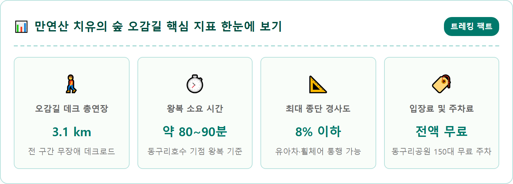
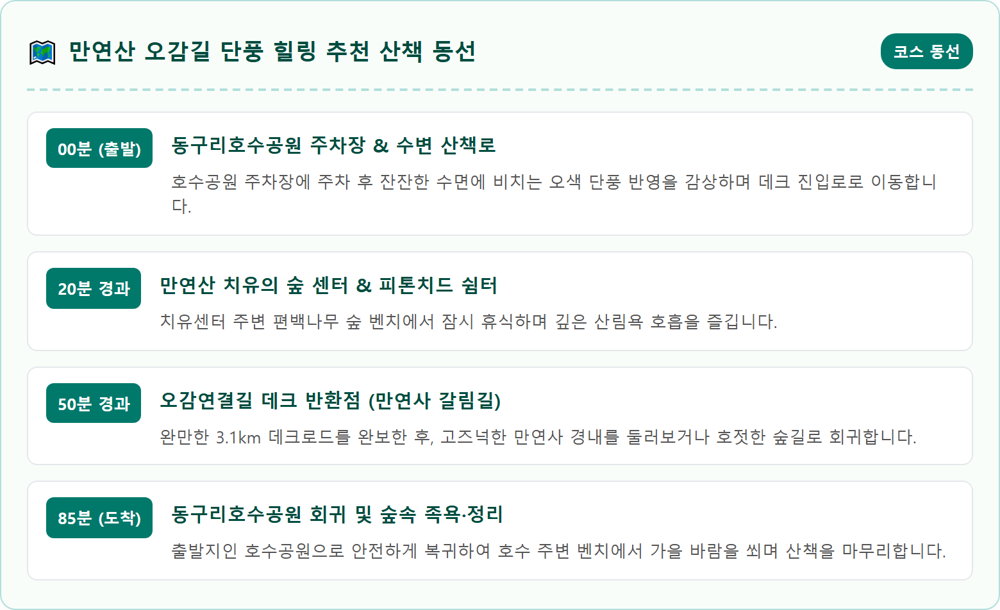
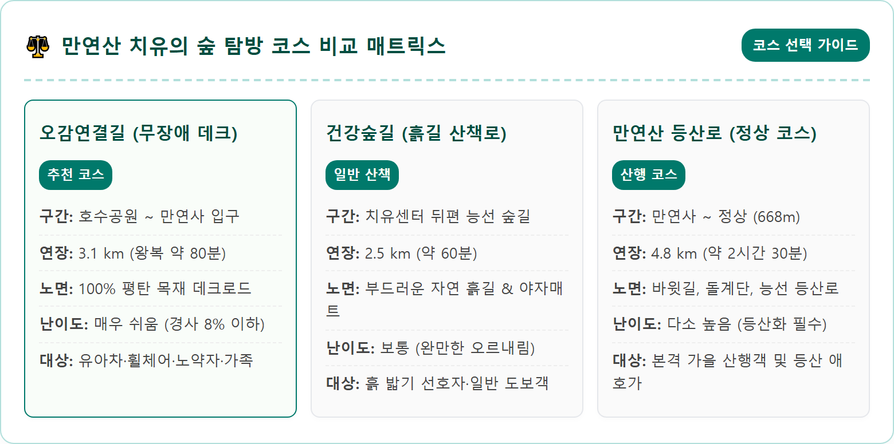
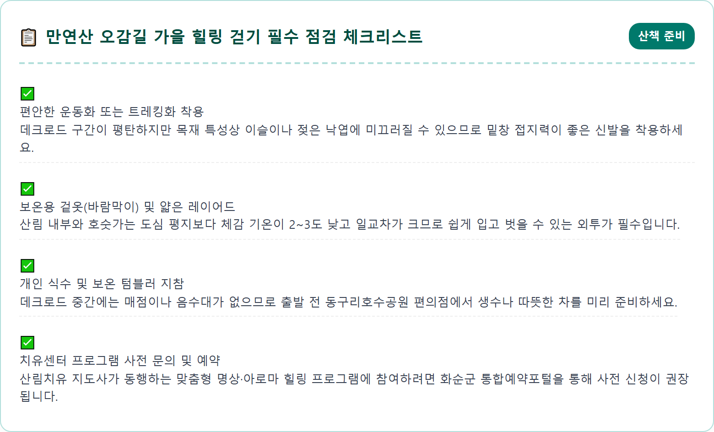
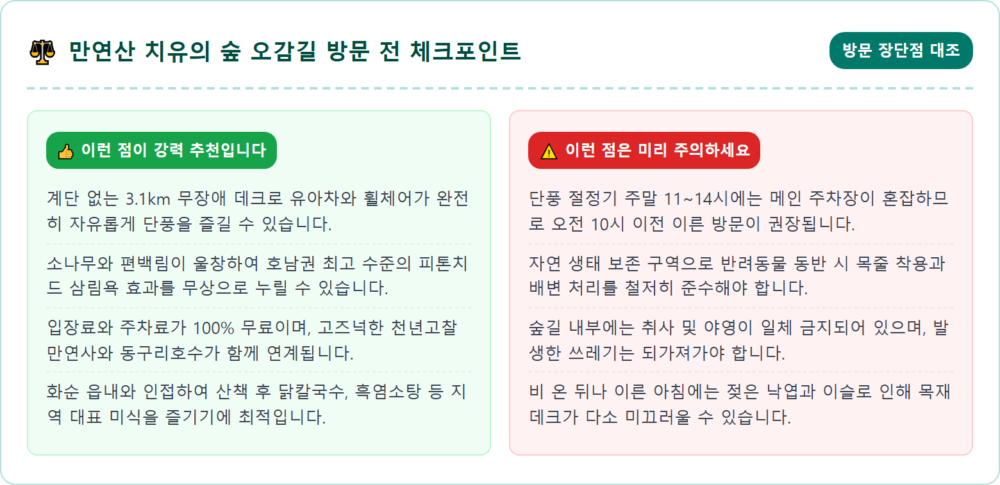
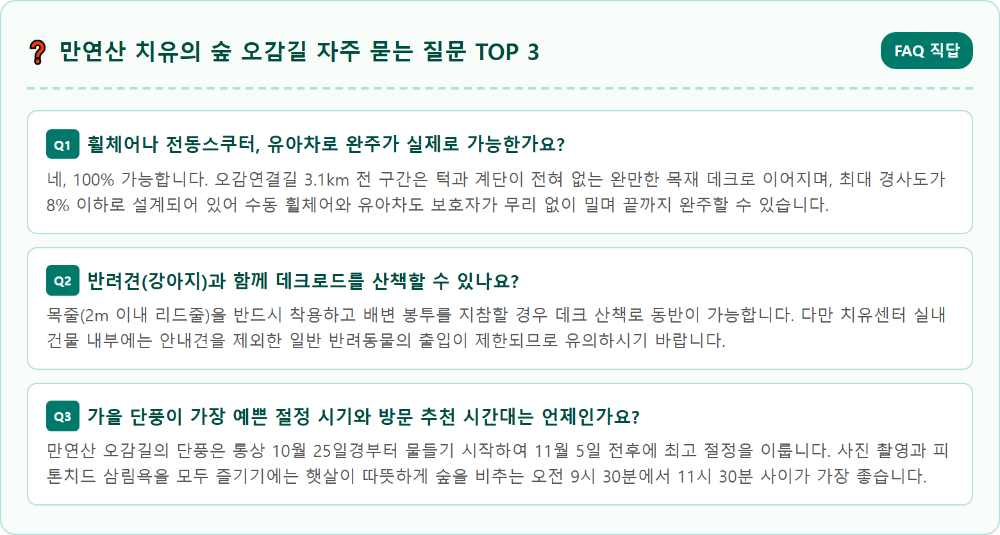

A tranquil and barrier-free wooden deck trail winding gently through a dense autumn forest at Manyeonsan Mountain Healing Forest in Hwasun, South Korea. Golden yellow ginkgo leaves and vibrant scarlet maple trees line the elevated wooden boardwalk path. Warm soft autumn morning sunlight filtering through tall pine trees and cedar groves, casting delicate shadows on the wooden planks. Calm and serene healing atmosphere with distant gentle mountain slopes and quiet lake view below. Ultra-realistic nature photography, 8k resolution, crisp details, natural color balance, cinematic composition.

전라남도 화순군 화순읍 동구리 일원에 자리 잡은 만연산(668m)은 무등산 국립공원의 남동쪽 자락과 맞닿아 있는 화순의 진산입니다. 도심에서 불과 10분 거리에 위치하면서도 깊은 산림의 원시적 자연생태를 고스란히 간직하고 있어 광주광역시와 호남권 주민들에게 가장 사랑받는 도심 근교 힐링 숲으로 손꼽힙니다. 특히 가을철 만연산은 소나무의 푸르름과 참나무, 당단풍나무의 붉고 노란 잎들이 환상적인 그러데이션을 이루며 장관을 연출합니다.
화순군은 이 울창한 산림 자원을 보존하면서 군민과 관광객들이 편안하게 치유의 시간을 가질 수 있도록 총 120ha 규모의 '만연산 치유의 숲'을 정성스럽게 조성했습니다. 그중에서도 숲의 가장 깊고 아름다운 허리를 따라 지상에서 살짝 띄운 목재 보행로로 연결한 '오감연결길'은 가을 단풍철 최고의 걷기 여행지로 평가받고 있습니다. 발걸음을 옮길 때마다 바스락거리는 낙엽 소리와 맑은 새소리가 귓가를 맴돌고, 차가운 가을 공기 속에 섞여 드는 은은한 편백나무 향기가 지친 심신을 부드럽게 감싸줍니다.
계단이나 험한 바윗길이 전혀 없이 완만한 경사로만 이어지는 무장애 숲길 덕분에, 거동이 불편한 어르신부터 유아차를 동반한 젊은 부모들까지 남녀노소 누구나 가을 단풍 숲의 정취를 한껏 만끽할 수 있습니다. 무장애 숲길의 본래 목적에 가장 충실하면서도 주변 경관과의 조화가 빼어난 화순 만연산 치유의 숲은 도심 생활의 번잡함을 벗어나 호젓한 자연의 품에 안기고 싶은 분들에게 최고의 쉼터가 되어줍니다.
만연산 치유의 숲 오감길이 전국적인 명성을 얻게 된 가장 큰 이유는 바로 보행 약자를 섬세하게 배려한 '무장애 나눔길' 설계에 있습니다. 총연장 약 3.1km에 달하는 오감길 전 구간은 계단이 일체 없는 목재 데크로드로 시공되어 있습니다. 노면의 폭은 성인 두 명이 여유 있게 나란히 걸을 수 있는 1.5~2.0m 규격을 유지하며, 휠체어나 유아차의 바퀴가 홈에 빠지지 않도록 정밀하게 마감되어 있습니다.
산지 지형을 그대로 살리면서도 종단 경사도를 8% 이하(완만한 램프 구간은 법정 기준 1/12 이하)로 철저히 제한하여, 가파른 오르막길 없이 평지를 걷듯 산책을 즐길 수 있습니다. 데크로드 양옆으로는 튼튼한 목재 안전 난간이 설치되어 있으며, 휠체어 이용자를 위한 범퍼 턱과 곳곳에 널찍한 교행 공간(쉼터)이 100~200m 간격으로 넉넉하게 마련되어 있어 다른 보행자와의 부딪힘 없이 여유로운 보행이 가능합니다.
숲길 곳곳에는 삼림욕을 즐기며 사색에 잠길 수 있는 숲속 쉼터, 평상, 썬베드형 벤치, 피톤치드 족욕장 등이 조성되어 있어 단풍 산책의 즐거움을 배가시킵니다. 숲의 훼손을 최소화하기 위해 지상에서 일정 높이 띄워 시공한 데크길 아래로는 다람쥐와 청설모가 자유롭게 오가며, 보행자는 숲의 식생을 발아래로 내려다보며 마치 나무 위를 걷는 듯한 특별한 생태적 공간감을 경험하게 됩니다.

만연산 치유의 숲을 가장 효율적으로 탐방하는 출발점은 바로 산자락 입구에 위치한 '동구리호수공원'입니다. 동구리호수공원은 원래 농업용 저수지였던 동구리제를 수변 테마공원으로 탈바꿈시킨 곳으로, 잔잔한 호수 둘레를 따라 조성된 수변 데크로드와 수려한 수목이 어우러져 산책의 훌륭한 전초기지 역할을 합니다. 가을철이면 호수 수면 위로 만연산의 울긋불긋한 단풍 그림자가 맑게 반영되어 감탄을 자아냅니다.
호수공원 상단부 화장실 맞은편에서 시작되는 치유의 숲 진입로를 따라 완만한 언덕을 약 5분 정도 오르면 본격적인 오감길 무장애 목재 데크로드가 펼쳐집니다. 이 지점부터 치유센터를 거쳐 숲길 반환점까지 이어지는 3.1km 구간은 울창한 소나무 숲과 활엽수 군락이 교차하며 계절의 변화를 온몸으로 실감하게 합니다. 성인 걸음 기준으로 천천히 주변 경관을 둘러보며 왕복하는 데 약 1시간 20분에서 1시간 30분 정도 소요되며, 걷는 거리는 약 3.5km 내외입니다.
구간별 핵심 뷰포인트로는 호수와 읍내 전경이 한눈에 내려다보이는 '전망 데크 쉼터', 피톤치드 방출량이 가장 높은 '편백나무 숲속 힐링존', 그리고 맑은 계곡물 소리가 잔잔하게 울려 퍼지는 '바람소리 쉼터'가 있습니다. 쉼터마다 편안한 등의자가 설치되어 있어 쉬엄쉬엄 담소를 나누며 단풍의 절정을 눈에 담기에 더없이 좋습니다.
만연산 치유의 숲이 자랑하는 또 다른 생태적 강점은 수십 년 수령의 소나무 군락과 정갈하게 가꾸어진 편백나무 숲이 이상적인 비율로 공존한다는 점입니다. 침엽수림에서 뿜어져 나오는 피톤치드(Phytoncide)는 나무가 해충과 곰팡이로부터 스스로를 보호하기 위해 발산하는 천연 항균 물질로, 인체의 자율신경계를 안정시키고 스트레스 호르몬인 코르티솔 수치를 낮추는 데 매우 탁월한 효능을 지닙니다.
가을철 맑고 청명한 오전 시간대(오전 10시~정오 사이)에 숲속 기온이 적당히 오르며 대류 현상이 일어날 때 피톤치드의 발산 농도가 하루 중 가장 높아집니다. 서늘한 바람을 맞으며 천천히 숲길을 걷는 동안 코끝으로 스며드는 알싸하고 청량한 삼림향은 폐부 깊숙한 곳까지 시원하게 정화해 줍니다. 일상 속 컴퓨터와 스마트폰에 지쳤던 눈과 뇌의 피로가 맑은 숲 공기 속에서 빠르게 회복되는 것을 경험할 수 있습니다.
실제로 화순군에서는 이 청정한 숲의 치유 인자를 극대화하기 위해 숲속 요가 매트 대여, 피톤치드 명상 프로그램 등 다양한 산림치유 콘텐츠를 정기적으로 운영하고 있습니다. 굳이 프로그램에 참여하지 않더라도 편백림 벤치에 잠시 누워 눈을 감고 바람에 흔들리는 나뭇가지 소리와 솔잎 향기에 귀를 기울이는 것만으로도 최고의 자연 테라피를 만끽할 수 있습니다.

오감길 데크로드를 걷다 보면 산자락 깊숙한 곳에 아늑하게 자리 잡은 고려 시대 천년고찰 '만연사(萬淵寺)'의 갈림길과 마주하게 됩니다. 대한불교조계종 제21교구 본사인 송광사의 말사인 만연사는 고려 명종 때 만연선사가 창건한 유서 깊은 사찰입니다. 나한도량으로 이름난 만연사는 거대한 대형 사찰의 번잡함 대신, 호젓하고 정갈한 산사의 고요함을 간직하고 있어 숲길 산책의 종착지로 완벽한 조화를 이룹니다.
만연사 경내에서 가장 눈길을 사로잡는 보석 같은 명소는 바로 사찰 입구의 누각인 '수홍루(水虹樓)'와 대웅전 앞마당에 서 있는 거대한 고목입니다. 가을이면 수홍루 주변의 맑은 개울물 위로 붉은 단풍잎이 떨어져 내리고, 누각 뒤편으로 펼쳐지는 산세가 한 폭의 산수화를 연상케 합니다. 특히 여름철 진분홍 꽃을 피워 사진작가들을 불러 모았던 백일홍(배롱나무) 고목은 가을철 고풍스러운 나뭇가지를 드러내며, 그 곁에 황금빛으로 물든 수백 년 수령의 은행나무와 어우러져 사찰 특유의 청량한 가을 정취를 극대화합니다.
산새 소리와 스님의 은은한 목탁 소리가 바람을 타고 퍼져 나오는 만연사 경내 벤치에 앉아 있으면 세상의 온갖 번뇌가 씻겨 나가는 듯한 평온함을 느끼게 됩니다. 오감길을 걷는다면 반드시 만연사 경내를 천천히 한 바퀴 돌아보는 30분의 여유를 일정에 포함하시길 적극 추천합니다.
자가용을 이용해 화순 만연산 치유의 숲을 방문할 계획이라면 주차 정보를 사전에 파악해 두는 것이 필수적입니다. 내비게이션에 '동구리호수공원 주차장'(전남 화순군 화순읍 동구리 123 일원)을 검색하고 방문하면 되며, 호수공원 바로 앞에 조성된 150대 규모의 공영 주차장을 무료로 이용할 수 있습니다. 전기차 충전소와 깨끗하게 관리되는 공중화장실, 흙먼지 털이기가 완비되어 있어 트레킹 전후 이용이 매우 편리합니다.
하지만 단풍이 절정에 이르는 10월 하순부터 11월 초순 주말에는 오전 10시 30분을 넘어서면 호수공원 메인 주차장이 만차에 이르는 경우가 잦습니다. 이때 무리하게 주차장 진입로에서 대기하기보다는, 도로를 따라 약 300m 정도 조금 더 올라가 만연사 진입로 주변의 보조 노상 주차 구역이나, 반대로 호수 아래쪽 화순읍 생활체육공원 인근의 임시 주차 공간을 활용하는 것이 훨씬 현명합니다.
만약 완전한 대중교통을 이용하고자 한다면 광주광역시 시내에서 출발하는 217번, 218번 농어촌 버스를 이용해 화순읍내 터미널이나 군청 인근에서 하차한 후, 군내버스로 환승하거나 택시(기본요금 수준, 약 5분 소요)를 이용하면 동구리호수공원 입구까지 막힘없이 접근할 수 있습니다.

오감길 데크로드가 지나는 숲의 중턱에는 지상 2층 규모의 '만연산 치유센터'가 자리 잡고 있습니다. 치유센터는 숲을 찾는 탐방객들에게 전문적인 산림치유 서비스를 제공하는 거점 공간으로, 건강측정실, 열치유실, 명상실, 아로마 테라피실 등 다양한 현대식 웰니스 설비를 갖추고 있습니다. 산책 전후 이곳에 들르면 혈압과 체성분 분석(인바디), 스트레스 지수를 무료로 측정하고 전문 치유사의 상담을 받을 수 있습니다.
치유센터에서 운영하는 산림치유 프로그램은 청소년 대상의 숲 체험부터 직장인을 위한 스트레스 완화 코스, 만성질환자 및 어르신을 위한 림프 순환 체조 등 대상별로 세분화되어 있습니다. 전문 산림치유 지도사와 함께 숲길을 걸으며 바른 보행법을 배우고, 숲속 해먹에 누워 싱잉볼의 맑은 소리를 들으며 진행되는 싱잉볼 명상은 참가자들의 만족도가 매우 높습니다.
치유센터 실외 정원에는 계절 꽃들이 만발한 치유정원과 야외 족욕 쉼터가 조성되어 있어 산책 중 잠시 발을 쉬어가기에 좋습니다. 센터 내부에는 따뜻한 차 한 잔을 마시며 통창 너머로 단풍 숲을 조망할 수 있는 북카페형 휴게 라운지도 운영되므로, 쌀쌀한 가을바람에 몸이 움츠러들 때 실내 온기를 느끼며 여유로운 사색을 즐길 수 있습니다.

만연산 치유의 숲에서 맑은 공기를 마시며 1시간 반가량의 상쾌한 트레킹을 마쳤다면, 화순의 풍성한 남도 가을 미식을 즐길 차례입니다. 동구리호수공원에서 차량으로 5분 거리인 화순읍내에는 현지인들이 입을 모아 칭찬하는 맛집들이 밀집해 있습니다. 화순의 대표 향토 음식으로는 환절기 기력 회복에 으뜸인 '흑염소탕'과 들깨가루를 듬뿍 넣어 구수하고 진한 국물이 일품인 '바지락 들깨칼국수', 그리고 정갈한 남도식 반찬이 한 상 가득 차려지는 '떡갈비 백반'이 유명합니다.
식사 후에는 화순의 대표적인 가을 관광 명소들을 묶어 드라이브를 이어가기에 좋습니다. 만연산에서 차로 15분 거리에는 붉은 절벽과 에메랄드빛 호수가 비경을 이루는 '화순적벽' 전망대와 물염정이 위치해 있어 웅장한 가을 풍광을 감상할 수 있습니다. 또한 수천 개의 돌탑과 와불로 신비로움을 자아내는 '운주사'나, 맑은 탄산 온천수로 유명한 '화순온천'을 연계하면 온종일 몸과 마음을 치유하는 완벽한 가을 힐링 코스가 완성됩니다.
가을날 화순은 수려한 자연과 푸근한 남도의 정, 그리고 깊은 맛이 어우러져 방문객들에게 잊지 못할 추억을 선물합니다. 숲길을 걸으며 일상의 피로를 털어내고, 따뜻한 남도의 밥상으로 활력을 채우는 하루 나들이는 가을 여행의 진정한 묘미를 일깨워 줄 것입니다.

화순 만연산 치유의 숲 오감길은 자연의 순수성을 보존하면서도 인간 중심의 무장애 설계를 가장 모범적으로 구현해 낸 남도의 대표 힐링 숲길입니다. 하지만 모든 탐방객이 안전하고 쾌적하게 숲을 누리기 위해서는 몇 가지 기본적인 에티켓을 지켜야 합니다. 데크로드 특성상 이른 아침이나 비가 내린 직후에는 젖은 낙엽과 이슬로 인해 바닥이 다소 미끄러울 수 있으므로 뛰지 말고 천천히 보행해야 합니다.
또한, 숲길 전 구간은 금연 및 금주 구역으로 지정되어 있으며, 산림 생태계 보존을 위해 밤, 도토리, 버섯 등 야생 임산물의 무단 채취는 엄격히 금지됩니다. 아름다운 자연을 미래 세대와 함께 나누기 위해 가져온 쓰레기는 반드시 전량 되가져가야 합니다. 보행 약자를 배려하여 휠체어나 유아차가 지나갈 때는 한쪽으로 길을 양보하는 따뜻한 배려의 마음가짐도 필요합니다.
붉게 타오르는 단풍과 청량한 피톤치드가 반기는 화순 만연산 오감길은 가파른 등산에 부담을 느끼는 분들에게 자연과 교감하는 가장 우아하고 편안한 산책로를 선물합니다. 이번 주말, 소중한 가족이나 연인의 손을 잡고 호수와 산사가 어우러진 화순 만연산 숲길을 걸으며 깊어가는 가을의 정취를 만끽해 보시기 바랍니다.